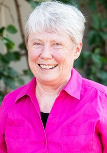
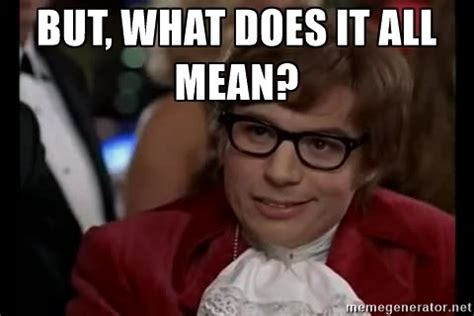
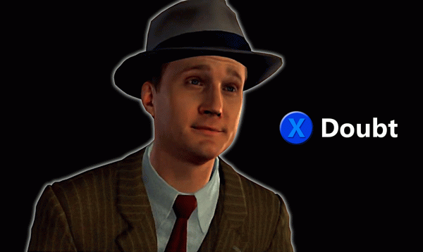
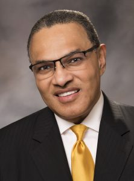
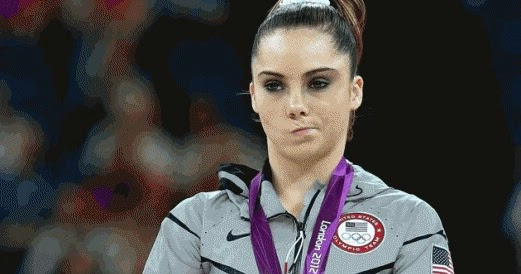
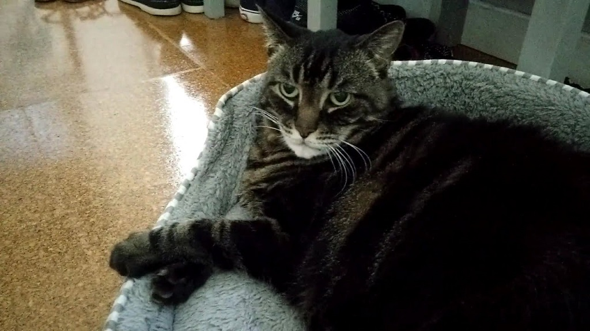
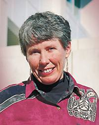

Meet Your Globo - Maria Klawe
March 3rd, 2021
When writing up my article on Calin Rovinescu I encountered a very interesting character in Maria Klawe. If you recall, I was moderately baffled as to how Lawyer/InvestmentBanker/MediocreCEO Calin Rovinescu had "earned," literally six honorary doctorate degrees from these Universities. So I decided to take a look at some of the other (((people))) who "earned," their honorary doctorates. Concordia University gave one to one Maria Klawe, and I can do no better than to simply copy paste my own work from there.
TDC_ARTICLE_START
Maria Klawe
For her scholarly work in the fields of computer science and mathematics as well as her advocacy on behalf of women and minorities in engineering, science and mathematics
Klawe is president of Harvey Mudd College in California. A computer scientist, Klawe worked in research and management at IBM. She also held professorships at Oakland University and the University of Toronto, and served as vice-president of Student and Academic Services at the University of British Columbia as well as dean of Engineering and Applied Science at Princeton University.
TDC_ARTICLE_STOP
Maria Klawe
As I said before, we all know the archetype, but I thought I might go down the Rabbi Hole as they say, and see what I can find on Ms. Klawe. Skimming her Wikipedia Page, we see the usual. Career Computer Science Academic, who spent just 8 years actually in the real world, where she was "first a research scientists, then manager of the Discrete Mathematics Group and manager of the Mathematics and Related Computer Science Department." It is entirely unclear if Maria Klawe has ever been paid to write a single line of code in her entire life, and indeed her life seems to be one of worming her way, or perhaps being (((placed))) into positions far above any competence she might have.
She then moved on immediately to be the head of the UBC Computer Science Department from 1988 to 1995, vice president of student and academic services from 1995 to 1998, and dean of science from 1998 to 2002. Then she did some unnamed stuff at Princeton, before becoming president of Harvey Mudd College. In 2009, she joined the board of directors of the Microsoft Corporation.
I've included this video of her, so you can have a fair guage of what you're dealing with here, goy. I'd highly recommend you skip ahead to ~50 seconds in, when she starts talking about Super Mario Bros 3. Get a load of this deep insight:
TDC_ARTICLE_START
"[Super Mario Bros] is just like doing mathematics. Because you're looking for patterns, and then testing your hypothesis. You just don't have to write down your proofs, you execute with your thumbs."
TDC_ARTICLE_STOP
Ah yes, it's nice to see this towering intellect in person. I genuinely had little idea what I was dealing with until looking up this. I think any lingering "maybe she's this brilliant mind," doubts have been thoroughly erased, and I'm starting on archetype 2: Spiteful Mutant.
Anyway, I bring you now Maria Klawe's "lessons shared on leadership governance and diversity."
Bedrosian:
TDC_ARTICLE_START
On Tuesday, March 8, the Bedrosian Center welcomed Maria Klawe to the Bedrosian Center at USC for an engaging conversation as part of our Lunch with a Leader series. Ms. Klawe is the President of Harvey Mudd College and has been a powerful force in closing the gender gap in science and engineering. She has devoted significant attention to improving science and math education across all ages and has studied the effects of gender on electronic game playing.
TDC_ARTICLE_STOP

The above piece was written in 2016. This is before #meToo, and child trannies. Before TERFS. Feminism, aka "Harvey Weinstein"-ism was very popular amongst the privileged. Now, there's been some problems created between the wahmens who were really on Team Wahmen, and the grifters who do whatever the fuck they're told. I can't help but notice that the whole "muh Gender Bias in Computer Science," bullshit has completely disappeared over the past two years, perhaps longer. It's just not a fake astroturfed issue worth pushing anymore.
TDC_ARTICLE_START
Klawe began the conversation by describing the main elements that structure her life: she has always been the first female to hold each position she has had, and she has held a passion for increasing diversity in science and engineering since she was 13 years old. Klawe explained, “I have a lot of experience having a microscope focused on me because women had not been in that position before.” As a teenager, she began noticing widespread messages that certain groups, mainly women, are not good at science. As a result, she decided to dedicate her life to bringing all kinds of diversity—gender, sexual orientation, race—into the science and engineering fields.
TDC_ARTICLE_STOP
I can't help but notice, goy, that she's certainly enjoyed a meteoric rise in her career, far outstripping what you would expect from her relatively modest credentials. Perhaps the imaginary struggle against "muh oppression," is in fact not simply irrelevant to her success, but rather the direct cause of it.
TDC_ARTICLE_START
Through her leadership, the college made great strides with diversifying the student body. The first step in increasing diversity at the college, she explained, was to reject the notion that diversity involves lowering standards.

The Board created a strategic planning initiative containing six main themes—one of which was diversity. To support the initiative, Mudd held a week-long diversity workshop open to students, faculty, and the public. Through a series of discussions and engaging speakers, including a passionate keynote speech from Freeman Hrabowski, the President of the University of Maryland Baltimore County who has championed diversity initiatives at his university, diversity became a pillar in the strategic plan, and the Mudd community owned it. Klawe notes, “It was important for the community to embrace diversity.
TDC_ARTICLE_STOP
Freeman A. Hrabowski
This is all just coded language for anti-White racial discrimination. Also, anti-Male discrimination, although I think nowadays that's definitely taken a hit.
TDC_ARTICLE_START
In addition to the workshop, Klawe and the Board implemented a variety of changes designed to increase diversity at the college. They looked at the photographs hanging throughout campus, the tour guides and admissions representatives that were the face of the college, and the photographs in admissions brochures to ensure that a diverse student and faculty body was represented. She focused resources on diversifying the faculty by training candidate search committees on best practices and having each faculty candidate interview with diversity leadership. She implemented term limits at the Board level to help revise the culture: “We have developed a Board who is much more connected with the Harvey Mudd of today than the Harvey Mudd of 20 years ago.”
TDC_ARTICLE_STOP
You know what I hate about Anti-Whites? The cowardice. Even though none of these people are themselves jews, they take their cues from them. Always hiding behind some "muh diversity, muh representation".
TDC_ARTICLE_START
Klawe also developed proactive programs to get women onto campus; for example, during her first 4 years as president, she wrote a personalized letter to every female admit, as a way of addressing the low yield rate for female students. Furthermore, Klawe realized that the college needed to learn a lot more about their applicant pool, specifically why certain students were choosing to not come to Mudd. She started meeting with leaders to try to raise the profile of Mudd nationally, and faculty started contacting every admitted student of color direcctly. Yields started rising almost immediately.

Klawe shared a few pieces of advice for students of color and female students in the STEM fields.
TDC_ARTICLE_STOP

Okay I can't take it anymore, and I think we all get the point. I just wanted to give you another example of how utterly rigged and corrupt the system really is.
TL:DR:
1) Ugly wahmen gets PhD in Comp Sci
2) Immediately lands cushy job with IBM
3) Does vague research for 8 years in leadership role
4) Immediately becomes vaguely high up behind the scenes bureaucrat at UBC
5) Upgrades to President of Harvey Mudd College
6) Upgrades to Board of Directors at Microsoft
7) The whole time is pushing anti-White and anti-Man policies, to get back at the society that rejected her for being ugly.
8) Forgot to mention, she also founded the "Computing Research Association: Widening Participation," NGO? PAC? Vague Thing?
